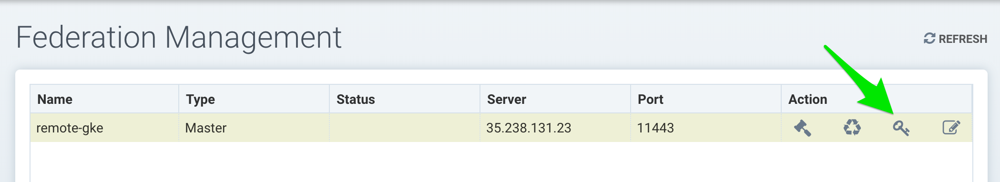
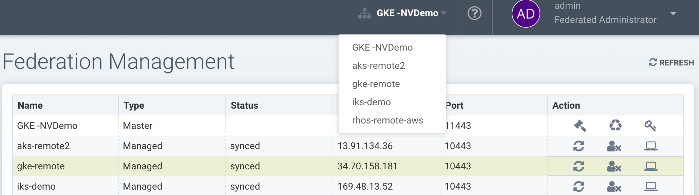
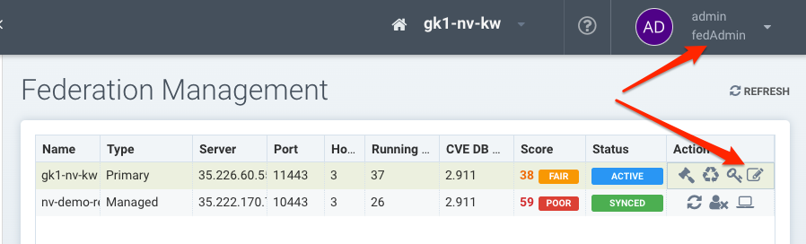

Gestion multi-cluster d’entreprise
Console d’entreprise
La console SUSE® Security peut être utilisée pour gérer de grands déploiements multi-cluster et multi-cloud d’entreprise. Un cluster doit être sélectionné comme le cluster principal, et d’autres clusters distants pourront alors rejoindre le principal. Une fois connecté, le cluster principal peut pousser des règles fédérées vers chaque cluster distant, qui s’affichent comme des règles fédérées dans les consoles de chaque cluster distant. Les registres fédérés scannés synchroniseront également les résultats de scan avec les clusters distants. Seuls les utilisateurs locaux et les utilisateurs Rancher ayant des autorisations d’administrateur peuvent promouvoir un cluster pour devenir le cluster principal.
En plus de la politique fédérée, la gestion multi-cluster prend en charge la surveillance de chaque cluster distant sur une page de synthèse, comme indiqué ci-dessous.

Il DOIT y avoir une connectivité réseau entre les contrôleurs de chaque cluster sur les ports requis. Le contrôleur est exposé à l’extérieur de son cluster par un service principal ou distant, comme le montre l’exemple du fichier yaml de déploiement SUSE® Security.
Configuration des clusters principaux et distants
Connectez-vous à la console du cluster qui sera le cluster principal. Dans le menu déroulant en haut à droite, sélectionnez Plusieurs Clusters puis Promouvoir pour configurer le cluster principal. Remarque : Seuls les utilisateurs locaux et les utilisateurs Rancher ayant des autorisations d’administrateur peuvent promouvoir un cluster pour devenir le cluster principal. Actuellement, les utilisateurs SSO/LDAP/OIDC avec un rôle d’administrateur ne sont pas autorisés à promouvoir un cluster en tant que principal.

Entrez l’IP publique et le port du service fed-master. Vous pouvez le trouver en exécutant
kubectl get svc -n neuvectorLa sortie ressemblera à :
NAME TYPE CLUSTER-IP EXTERNAL-IP PORT(S) AGE
neuvector-service-controller-fed-master LoadBalancer 10.27.249.147 35.238.131.23 11443:31878/TCP 17d
neuvector-service-controller-fed-worker LoadBalancer 10.27.251.1 35.226.199.111 10443:32736/TCP 17dDans l’exemple ci-dessus, le nom d’hôte/IP du contrôleur principal est 35.238.131.23 et le port est 11443. Remarque : Assurez-vous que cette adresse IP et ce port sont accessibles de l’extérieur (depuis les clusters distants). Remarque : Les horloges système (temps) doivent être les mêmes pour chaque cluster principal et distant afin de fonctionner correctement.
Après vous être reconnecté à la console, sélectionnez à nouveau Plusieurs Clusters dans le menu en haut à droite, puis cliquez sur l’icône pour générer un token nécessaire pour connecter les clusters distants. Copiez le token pour l’utiliser à l’étape suivante. Le token est valide pendant environ 1 heure, et s’il expire, il doit être généré à nouveau pour connecter de futurs clusters distants.

Pour rejoindre un cluster distant au principal, connectez-vous à la console du cluster distant en tant qu’administrateur. Sélectionnez Plusieurs Clusters dans le menu déroulant en haut à droite, puis cliquez sur Rejoindre. Entrez l’adresse IP ou le nom d’hôte du contrôleur pour le cluster distant ainsi que le port. Encore une fois, vous pouvez récupérer cette information depuis le cluster distant en faisant :
kubectl get svc -n neuvectorUtilisez la sortie pour le fed-worker du cluster distant pour configurer l’adresse IP et le port. Ensuite, entrez le token copié depuis le principal. Notez qu’après avoir entré le token, l’adresse IP et le port pour le principal seront automatiquement remplis, mais cela peut être modifié ou saisi manuellement.

Déconnectez-vous du cluster distant et reconnectez-vous au principal. Ou si vous êtes déjà connecté, cliquez sur Rafraîchir et le cluster distant sera listé dans le menu Plusieurs clusters.

Vous pouvez cliquer sur l’icône de gestion dans la liste, ou utiliser le menu multi-clusters déroulant en haut pour changer de cluster à tout moment. Une fois que vous avez changé pour un cluster distant, tous les éléments du menu à gauche s’appliquent désormais au cluster distant.
Dépannage
Pour s’assurer que les services répondent comme prévu, vous pouvez exécuter les tests depuis l’extérieur des clusters, ou, si nécessaire, depuis les pods de test sur les clusters fed-master et fed-managed pour garantir que la connexion réseau est autorisée entre les clusters.
Vérifiez le service fed-master
Le port de service du cluster 11443 n’est accessible qu’après avoir activé le service fed-master. La commande ci-dessous renvoie un code d’erreur lorsque le service fed-master répond pour indiquer que la ressource demandée est indisponible.
{"code":1,"error":"URL not found","message":"URL not found"}|
L’URL de la commande |
curl -v https://<fed-master>[:<port>]/v1/eulaVérifiez le service fed-managed
Le port de service du cluster 10443 est partagé entre REST API et le service fed-managed. La commande ci-dessous renvoie un code de succès lorsque le service fed-managed répond pour indiquer qu’il est disponible.
{"eula":{"accepted":true}})|
L’URL de la commande |
curl -v https://<fed-managed>[:<port>]/v1/eulaPolitique fédérée
Veuillez consulter la section Politique → de la Politique fédérée pour des instructions sur la manière de créer des règles fédérées qui seront poussées vers chaque cluster.
Registres fédérés pour les résultats de scan d’images distribuées
Le cluster principal (maître) peut scanner un registre/repo désigné comme registre fédéré. Les résultats de scan de ces registres seront synchronisés sur tous les clusters gérés (distants). Cela permet d’afficher les résultats de scan dans la console du cluster géré ainsi que d’utiliser les résultats dans les règles de contrôle d’admission du cluster géré. Les registres n’ont besoin d’être scannés qu’une seule fois au lieu d’être scannés par chaque cluster, réduisant ainsi l’utilisation de l’UC/mémoire et de la bande passante réseau.
Les registres fédérés ne peuvent être configurés que par un administrateur fédéré sur le cluster principal dans les Actifs → Registres. Après avoir ajouté et scanné un dépôt fédéré, les résultats de scan seront synchronisés sur tous les clusters gérés. Les règles de contrôle d’admission dans chaque cluster géré qui nécessitent un scan d’image (par exemple, CVE, règles basées sur la conformité) utiliseront automatiquement à la fois les résultats de scan fédérés ainsi que les résultats de scan de registre configurés localement.
Fédération des résultats des scanners CI/CD (optionnel)
Les résultats de scan du registre fédéré sont toujours synchronisés avec les clusters gérés, comme décrit ci-dessus. Le cluster principal peut également recevoir des résultats de scan provenant d’analyses effectuées par des scanners autonomes ou de plug-ins de scanner invoqués depuis un pipeline CI/CD de construction. Pour permettre aux résultats de scan de dépôt de la phase de construction (CI/CD) de se synchroniser également avec les clusters gérés, commencez par l’activer en modifiant les paramètres du cluster principal (maître) comme indiqué ci-dessous.
